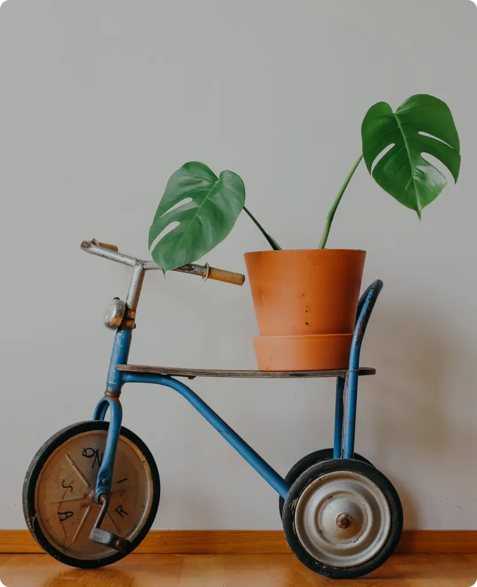

Workshop zaaien
bij de OBA linnaeusstraat houden we regelmatig workshops waar wij samen gaan zaaien.
OBA Linnaeusstraat
11,-
29/05/2024
Workshops zijn fantastische leermogelijkheden waarbij deelnemers
praktische vaardigheden kunnen verwerven, nieuwe kennis kunnen
opdoen en vaak ook nieuwe mensen kunnen ontmoeten.
Extra Info
Het idee achter jouw website om een overzicht te bieden van beschikbare workshops
is geweldig, omdat het mensen kan helpen om gemakkelijk toegang te krijgen tot deze
waardevolle leermogelijkheden. Ontdek en Leer met Onze Workshopgids Welkom bij Plantswap, dé plek om workshops te ontdekken die jouw vaardigheden kunnen verbeteren, je passies kunnen verdiepen en je horizon kunnen verbreden
